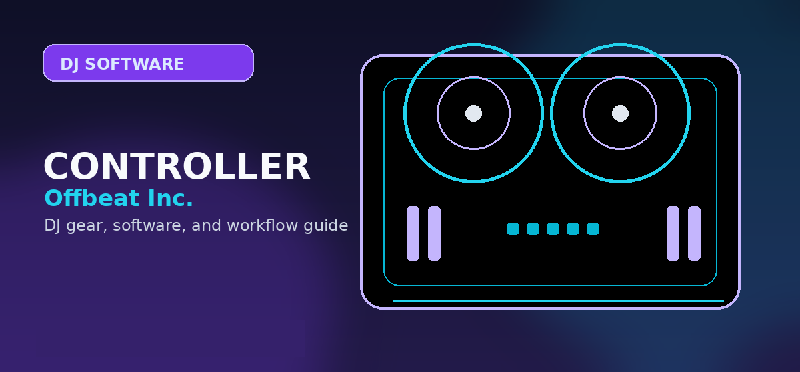

Rane One Review 2026: The Ultimate Motorized Scratch Controller for Serato DJs?
Comprehensive guide to Rane One review 2026 motorized platter scratch controller Serato with practical recommendations and current buying notes — updated 2026.

Disclosure: This page uses affiliate links. We may earn a commission at no extra cost to you. Full disclosure →
In 2026, the divide between traditional vinyl purists and digital controllers has nearly vanished, but few pieces of hardware bridge the gap as effectively as the Rane One. For turntablists and scratch DJs, the "feel" of a platter is everything. While capacitive jogs have improved, they often lack the physical inertia and tactile feedback required for high-level performance. The Rane One solves this by integrating fully motorized platters that mimic the torque and resistance of a classic Technics 1200. Designed specifically for Serato DJ Pro, this controller offers a seamless, plug-and-play experience that removes the need for timecodes and needles while retaining the physical soul of DJing. Whether you are a bedroom producer transitioning from FL Studio to the decks or a club pro, the Rane One remains the gold standard for motorized digital control.
The Motorized Experience: Analog Feel, Digital Precision
The centerpiece of the Rane One is undoubtedly its motorized platters. Unlike standard controllers where the jog wheel is simply a sensor, the Rane One’s platters actually spin, providing the physical resistance and "slip" that scratch DJs rely on for precise cuts and flares. In 2026, this remains a critical advantage; the momentum of the platter allows for natural deceleration and a tactile connection to the music that software-based wheels cannot replicate. The torque is adjustable, ensuring that the platter responds predictably whether you are doing a slow fade or a rapid-fire scratch. For those moving away from heavy vinyl crates, the Rane One provides the psychological and physical comfort of a turntable without the fragility of a stylus.
Deep Serato Integration and Performance Workflow
The Rane One is built from the ground up for Serato DJ Pro, and the synergy is flawless. The mapping is intuitive, placing the most critical scratch tools—cue buttons, platter start/stop, and sync—exactly where a turntablist expects them. The low-latency response ensures that the audio triggers instantly upon touch, which is mandatory for complex scratching. In the current 2026 ecosystem, where DJs often blend live performance with digital samples, the Rane One handles the transition between traditional mixing and rhythmic scratching effortlessly. The integration allows for a "hybrid" workflow where you can enjoy the convenience of digital library management and stem separation while maintaining the physical performance style of a classic battle DJ.
Professional Grade Build and Hardware Durability
Rane has a reputation for building "tanks," and the Rane One is no exception. Every knob, fader, and button feels industrial and secure. The crossfader—the most abused component in any scratch setup—is a high-performance professional grade fader designed for millions of cycles. It offers a crisp, tactile snap that is essential for sharp cuts. Priced typically around $1,999, the investment is reflected in the chassis' stability; it doesn't slide during aggressive scratching sessions. The mixer section is equally robust, providing clear headroom and a professional-grade EQ that ensures your transitions remain clean and punchy, whether you're playing a small lounge or a festival stage.
Rane One vs. Traditional Turntables in 2026
When compared to a traditional Technics 1200 setup paired with a DVS (Digital Vinyl System), the Rane One wins on convenience and cost. A full analog-to-digital setup requires two turntables, a mixer, an audio interface, and specialized timecode vinyl, often costing well over $3,000. The Rane One consolidates this entire chain into a single USB-powered unit. While purists may still argue for the "warmth" of real wax, the Rane One provides 95% of that physical experience with 0% of the maintenance. There are no needles to replace, no records to warp, and no calibration issues. It is the most efficient way to maintain a turntablist skill set in a digital-first world.
Controller Comparison Matrix
| Feature | Rane One | Pioneer DDJ-REV7 | Technics 1200 + DVS |
|---|---|---|---|
| Platter Type | Fully Motorized | Capacitive / Static | Analog Motorized |
| Software | Serato DJ Pro | Serato / Rekordbox | Universal (DVS) |
| Tactile Feel | High (Vinyl-like) | Medium (Smooth) | Maximum (True Vinyl) |
| Setup Time | Instant (USB) | Instant (USB) | Slow (Calibration) |
| Est. Price | $1,999 | $1,499 | $3,000+ |
| Durability | Professional/Industrial | High | Legendary |
Pros & Cons
✅ Pros
- Motorised jog wheels — turns feel like real vinyl
- Best Serato hardware integration available
- Built in mixing for phono (belt turntable compatible)
- Solid full-metal construction for gigging
- Slip mode and real-time pitch fader mimic a scratch setup
❌ Cons
- Price ~$1,399 — premium over non-motorised controllers
- Serato DJ Pro subscription required ($12/mo or $149 one-time)
- Larger footprint than standard controllers
- Motorised platters need calibration over time
Key Specs
Quick Verdict
Best motorised controller for scratch DJs in 2026 — the Rane One bridges the gap between turntables and digital performance. If you miss the feel of vinyl, this is the controller to buy. Search RANE ONE motorized controller on Amazon →
Shop on Amazon
Check Rane One price on Amazon — motorized platters, tactile scratching.
Also Available on zZounds
Motorized battle controller — financing available, 45-day return window.
Who Should Buy This?
Rane One Review 2026 is the right choice if you want professional-grade quality that will last through years of regular use. It suits DJs who have moved past entry-level gear and need something that can handle club environments and regular touring.
- Ideal for: intermediate to advanced DJs upgrading from a first controller
- Not ideal for: first-time buyers on a tight budget who should start with a more forgiving entry-level option
- Best purchased from: an authorised retailer with warranty coverage
Rane One Buyer’s Guide: Is It Right For You?
| Your Use Case | Why Rane One Fits | Better Alternative |
|---|---|---|
| Mobile Scratch DJ | Portable motorized platter control. | Pioneer DDJ-REV7 (for screen integration) |
| Club Standard Prep | Feels like real vinyl for home practice. | CDJ-3000 + DJM-A9 setup |
| Budget-Conscious | High-end feel without turntable prices. | Rane Four (if you need stem control) |
Final Verdict
The Rane One remains the gold standard for DJs who want the analog feel of vinyl in a digital package. Its build quality, high-torque platters, and seamless Serato integration make it a top-tier choice for 2026.
Shop Rane One on AmazonOfficial product and support pages
The RANE ONE is for DJs who value motorized platter feel more than maximum portability.
It is a better scratch/performance tool than a beginner all-rounder.
Confirm weight, case needs, and Serato workflow before treating it as a mobile rig.
Use these official pages to confirm current specifications, software compatibility, and support details before buying.
Frequently Asked Questions
Is the Rane One good for scratching?
Yes. The Rane One is widely regarded as one of the best motorized DVS controllers for scratching. Its 7-inch high-torque motorized platter feels closest to real vinyl for scratch DJs.
Rane One vs Pioneer DDJ-REV7 — which is better?
The Rane One ($1,099) and DDJ-REV7 ($1,299) are the top two battle-style scratch controllers. Rane One is preferred by scratch specialists for its platter feel. DDJ-REV7 has Pioneer's ecosystem and Rekordbox compatibility.
Does the Rane One work with Traktor?
Yes, via MIDI mode. The Rane One officially supports Serato DJ Pro natively. Traktor compatibility requires MIDI mapping and a Traktor Scratch license for DVS functionality.
Is the Rane One worth $1,099?
For hip-hop and scratch DJs who want the best motorized platter in a controller format, yes. For DJs who don't scratch, the Pioneer DDJ-800 or FLX6 offer better value.
Does the Rane One include software?
Yes. The Rane One includes a Serato DJ Pro license — a $149/year value included in the hardware purchase.
Rane One 2026: Best Motorized Scratch Controller for Serato DJs
Before you click out or compare live prices, use this quick fit check to avoid the wrong buy.
- Motorized platters deliver true vinyl-like feel with adjustable torque for precise cuts and flares.
- Built-in Serato DJ Pro integration ensures low-latency performance and intuitive workflow for turntablists.
- Professional-grade durability and single-unit convenience reduce long-term costs vs. traditional turntable setups.
Related next reads: